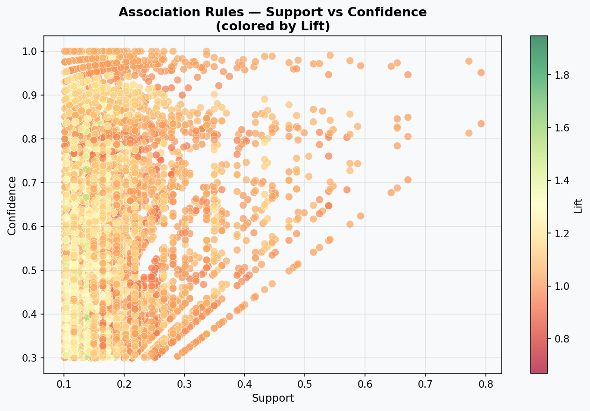
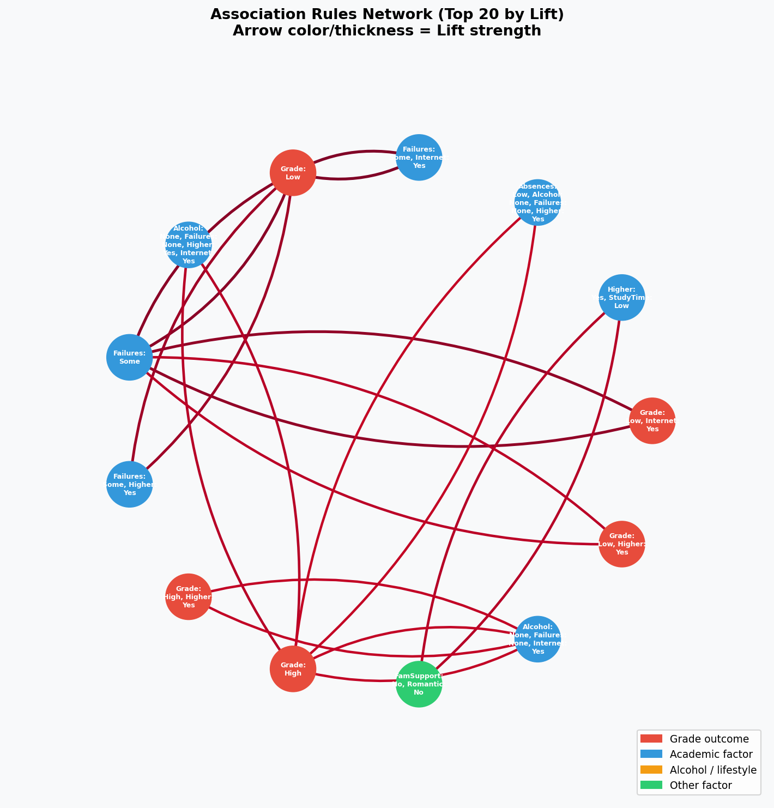
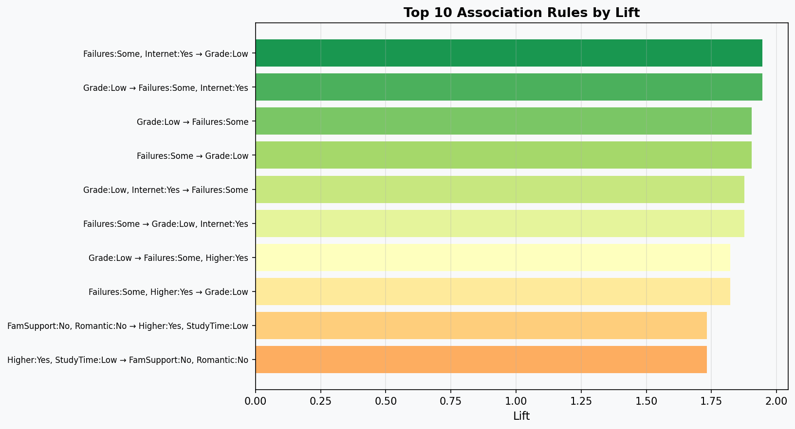

ARM & Association
Rule Mining
Discovering patterns between student behaviors and academic outcomes using the Apriori algorithm.
📄 View Full Code →Overview: What is ARM?
Association Rule Mining (ARM) is an unsupervised data mining technique that identifies interesting relationships — called rules — between variables in large datasets. ARM was originally developed for market basket analysis (e.g., "customers who buy bread also buy butter"), but it applies equally well to any transactional or event-based dataset. In the context of student performance, ARM uncovers statements like: "students who have no past failures and use the internet are likely to aspire to higher education." These rules provide interpretable, human-readable insights that complement the more abstract patterns found by clustering and PCA.
An association rule takes the form: {antecedents} → {consequents}. The strength of a rule is measured by three core metrics:
Key Metrics
| Metric | Formula | Meaning |
|---|---|---|
| Support | freq(A ∪ B) / N |
How often the rule appears in the dataset (frequency). Higher = more common pattern. |
| Confidence | freq(A ∪ B) / freq(A) |
How often the rule is correct given the antecedent. P(B | A). Higher = more reliable rule. |
| Lift | confidence / support(B) |
How much more likely A and B co-occur vs by chance. Lift > 1 = positive association. The most informative metric. |
The Apriori Algorithm
The Apriori algorithm is the foundational method for ARM. It works in two phases: first, it discovers all frequent itemsets — combinations of items that appear together in at least min_support fraction of transactions. It exploits the anti-monotone property: if an itemset is infrequent, all of its supersets must also be infrequent, allowing large portions of the search space to be pruned. Second, it generates association rules from the frequent itemsets and filters them by a min_confidence threshold. The result is a set of high-quality, statistically meaningful if-then rules derived directly from the data.
Thresholds used in this project: Min support = 0.10 (rule must appear in ≥10% of students), Min confidence = 0.30 (rule must be correct ≥30% of the time). These were chosen to balance specificity and generalizability — too low a threshold produces too many trivial rules; too high misses meaningful patterns.
Data Preparation
ARM requires unlabeled transactional data — each "transaction" is a list of present items (attributes) for one record, without numeric values or labels. Unlike regression or clustering, ARM cannot use raw numeric columns; all features must be converted to interpretable categorical items.
Transaction Construction
Each student was converted into a transaction — a list of discrete behavioral and academic items:
StudyTime:Low / Medium / High / VeryHigh(from numeric 1–4)Absences:Low(≤6) orAbsences:High(>6)Alcohol:None / Low / Medium / High / VeryHigh(Walc 1–5)Internet:Yes / NoFailures:NoneorFailures:SomeFamSupport:Yes / No,Higher:Yes / No,Romantic:Yes / NoFreeTime:VeryLow / Low / Medium / High / VeryHighGrade:Low(G3 <10) /Grade:Medium(10–13) /Grade:High(≥14)
Sample transaction data: Download sample transactions CSV →
Sample Transactions (first 5 students):
0: StudyTime:Low, Absences:Low, Alcohol:Low, Internet:No, Failures:None, FamSupport:Yes, Higher:Yes, Romantic:No, FreeTime:Medium, Grade:Low
1: StudyTime:Medium, Absences:Low, Alcohol:Low, Internet:Yes, Failures:None, FamSupport:No, Higher:Yes, Romantic:No, FreeTime:Low, Grade:Medium
2: StudyTime:Medium, Absences:High, Alcohol:Medium, Internet:Yes, Failures:None, FamSupport:Yes, Higher:Yes, Romantic:No, FreeTime:Medium, Grade:High
3: StudyTime:Medium, Absences:Low, Alcohol:None, Internet:Yes, Failures:None, FamSupport:Yes, Higher:Yes, Romantic:Yes, FreeTime:Medium, Grade:High
4: StudyTime:Low, Absences:Low, Alcohol:None, Internet:No, Failures:None, FamSupport:Yes, Higher:Yes, Romantic:No, FreeTime:High, Grade:Medium
Code
ARM was implemented in Python 3 using the mlxtend library. Core packages used: mlxtend (apriori, association_rules, TransactionEncoder), pandas, numpy, matplotlib.
Results & Visualizations
Support vs Confidence Scatter (colored by Lift)

Association Rule Network (Top 20 by Lift)

Top 10 Rules by Lift

Top 15 Rules by Support
Most commonly occurring rule combinations among students. High support = widely observed patterns.
| # | Antecedents | Consequents | Support | Confidence | Lift |
|---|---|---|---|---|---|
| 1 | Internet:Yes | Higher:Yes | 0.792 | 0.951 | 1.002 |
| 2 | Higher:Yes | Internet:Yes | 0.792 | 0.835 | 1.002 |
| 3 | Failures:None | Higher:Yes | 0.772 | 0.978 | 1.030 |
| 4 | Higher:Yes | Failures:None | 0.772 | 0.813 | 1.030 |
| 5 | Absences:Low | Higher:Yes | 0.671 | 0.946 | 0.997 |
| 6 | Higher:Yes | Absences:Low | 0.671 | 0.707 | 0.997 |
| 7 | Internet:Yes | Failures:None | 0.671 | 0.805 | 1.020 |
| 8 | Failures:None | Internet:Yes | 0.671 | 0.849 | 1.020 |
| 9 | Failures:None, Internet:Yes | Higher:Yes | 0.653 | 0.974 | 1.026 |
| 10 | Higher:Yes, Internet:Yes | Failures:None | 0.653 | 0.824 | 1.044 |
| 11 | Failures:None, Higher:Yes | Internet:Yes | 0.653 | 0.846 | 1.016 |
| 12 | Internet:Yes | Failures:None, Higher:Yes | 0.653 | 0.784 | 1.016 |
| 13 | Failures:None | Higher:Yes, Internet:Yes | 0.653 | 0.827 | 1.044 |
| 14 | Higher:Yes | Failures:None, Internet:Yes | 0.653 | 0.688 | 1.026 |
| 15 | Romantic:No | Higher:Yes | 0.643 | 0.966 | 1.017 |
Top 15 Rules by Confidence
Most reliable rules — when the antecedent is present, the consequent is nearly always present too.
| # | Antecedents | Consequents | Support | Confidence | Lift |
|---|---|---|---|---|---|
| 1 | Grade:High | Higher:Yes | 0.253 | 1.000 | 1.053 |
| 2 | StudyTime:High | Higher:Yes | 0.165 | 1.000 | 1.053 |
| 3 | Absences:Low, Grade:High | Higher:Yes | 0.205 | 1.000 | 1.053 |
| 4 | Absences:Low, StudyTime:High | Higher:Yes | 0.124 | 1.000 | 1.053 |
| 5 | Alcohol:Low, Romantic:No | Higher:Yes | 0.142 | 1.000 | 1.053 |
| 6 | Alcohol:None, Grade:High | Higher:Yes | 0.124 | 1.000 | 1.053 |
| 7 | Failures:None, FreeTime:Low | Higher:Yes | 0.132 | 1.000 | 1.053 |
| 8 | Failures:None, Grade:High | Higher:Yes | 0.246 | 1.000 | 1.053 |
| 9 | Failures:None, Internet:No | Higher:Yes | 0.119 | 1.000 | 1.053 |
| 10 | Failures:None, StudyTime:High | Higher:Yes | 0.137 | 1.000 | 1.053 |
| 11 | FamSupport:No, Grade:High | Higher:Yes | 0.101 | 1.000 | 1.053 |
| 12 | FamSupport:Yes, Grade:High | Higher:Yes | 0.152 | 1.000 | 1.053 |
| 13 | FamSupport:Yes, StudyTime:High | Higher:Yes | 0.109 | 1.000 | 1.053 |
| 14 | Grade:High, Internet:Yes | Higher:Yes | 0.228 | 1.000 | 1.053 |
| 15 | Grade:High, Romantic:No | Higher:Yes | 0.187 | 1.000 | 1.053 |
Top 15 Rules by Lift
Rules where the co-occurrence is most unexpected — a lift > 1.0 means the items appear together more often than if they were independent, suggesting a real association.
| # | Antecedents | Consequents | Support | Confidence | Lift |
|---|---|---|---|---|---|
| 1 | Failures:Some, Internet:Yes | Grade:Low | 0.104 | 0.641 | 1.947 |
| 2 | Grade:Low | Failures:Some, Internet:Yes | 0.104 | 0.315 | 1.947 |
| 3 | Grade:Low | Failures:Some | 0.132 | 0.400 | 1.904 |
| 4 | Failures:Some | Grade:Low | 0.132 | 0.627 | 1.904 |
| 5 | Grade:Low, Internet:Yes | Failures:Some | 0.104 | 0.394 | 1.876 |
| 6 | Failures:Some | Grade:Low, Internet:Yes | 0.104 | 0.494 | 1.876 |
| 7 | Grade:Low | Failures:Some, Higher:Yes | 0.106 | 0.323 | 1.823 |
| 8 | Failures:Some, Higher:Yes | Grade:Low | 0.106 | 0.600 | 1.823 |
| 9 | FamSupport:No, Romantic:No | Higher:Yes, StudyTime:Low | 0.106 | 0.408 | 1.732 |
| 10 | Higher:Yes, StudyTime:Low | FamSupport:No, Romantic:No | 0.106 | 0.452 | 1.732 |
| 11 | Alcohol:None, Failures:None, Higher:Yes, Internet:Yes | Grade:High | 0.111 | 0.436 | 1.721 |
| 12 | Grade:High | Alcohol:None, Failures:None, Higher:Yes, Internet:Yes | 0.111 | 0.440 | 1.721 |
| 13 | Grade:Low, Higher:Yes | Failures:Some | 0.106 | 0.359 | 1.708 |
| 14 | Failures:Some | Grade:Low, Higher:Yes | 0.106 | 0.506 | 1.708 |
| 15 | Alcohol:None, Failures:None, Internet:Yes | Grade:High | 0.111 | 0.423 | 1.671 |
Conclusions
What did ARM reveal about student performance?
The association rules uncovered several clear and interpretable patterns that confirm and extend the findings from EDA and clustering:
-
Past failures are the strongest predictor of low grades: The top rules by lift all involve
Failures:Some → Grade:Low, with lift values up to 1.947. Students with any academic failure history are nearly twice as likely to receive low final grades. -
High achievers share a consistent behavioral profile: High-confidence rules reveal that
Grade:Highstudents almost universally aspire to higher education, consume no or low alcohol, have no past failures, and use the internet. This "success profile" is highly consistent. - Internet access co-occurs with academic resilience: Even among students with some failures, internet access is frequently associated with higher goal-setting (higher education aspiration), suggesting it may serve as both a resource and a motivational signal.
-
Aspiration to higher education is universal across most the dataset: The high-support rules show that
Higher:Yesco-occurs with nearly every other positive behavioral attribute — showing that academic ambition is widely held but must be supported by reducing failures and absences. - Alcohol and social behavior interact with performance: The network visualization reveals that alcohol items form a distinct cluster of rules pointing toward Grade:Low, reinforcing findings from EDA that lifestyle choices have measurable effects on academic outcomes.
These rule-based findings complement the clustering and PCA analyses by providing specific, actionable insights: rather than just grouping students, ARM tells us which combinations of behaviors predict which outcomes, enabling targeted interventions in real educational settings.